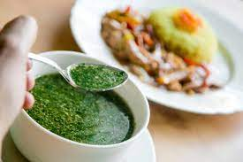
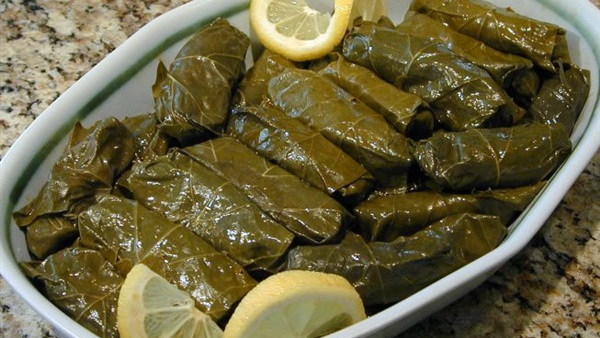
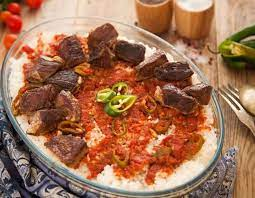
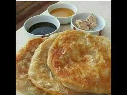

<!DOCTYPE HTML>
<HTML>
<link rel="stylesheet"href="css/new 1.css">
<title> EGYPTIAN FOOD </title>
<button><a href="about.html"> About</a></button>
<button><a href ="food.html">foods</a><button>
<button><a href ="dessert.html">Dessert</a><button>
<button><a href="more info.html">more informatio </a></button> 

</HTML>
<BODY>
<h1>EGYPTIAN FOOD</h1>
<P style="color:purple;text-align:center;font-family:26;font-weight:bold;">From falafel to Koshary 8 dishes of the most famous Egyptian cuisine</p>


<p style="color:navy;font-size:30px;text-align:center;font-weight:bold;">

  And the culinary tradition in Egypt extends back more than 5 thousand years, that is, <br>
  since the time of the pharaohs.During the centuries that followed, local food,<br> 
  from ingredients and methods of preparation, imposed its control<br> over all the people who wandered 
  all over Egypt, including the Greeks, Romans, Arabs, Ottomans, French and British.<br>
  But what distinguishes Egyptian cuisine is the way these dishes are prepared with different 
  ingredients and flavors
</p>
<br>
  <hr width="70%">
 <div class="sec1">
<h2>molokhia <h2>
 
 <p>
 green soup prepared in various styles,<br>
  wherein the mallow leaves are very finely chopped, with ingredients such as <br>
  garlic and coriander added for a characteristic aromatic taste, then cooked with <br>
  chicken broth. Other  kinds of broths can be used such as rabbit, shrimp, <br>
  which is popular in Alexandria, and fish in Port Said. It is often considered the country's national dis
 
  
  </p>
 </div>
 
 <br>
 
 <hr width="70%">
 <div class="sec1">
<h2>koshary<h2>
 
 <p>
  An Egyptian dish originally made in the 19th century,<br>
  made of rice, macaroni and lentils mixed together, topped with a spiced tomato sauce, <br>
  and garlic vinegar,garnished with chickpeas and crispy fried onions.<br>
  A sprinkling of garlic juice, or garlic vinegar, and hot sauce are optional.<br>
  It is a popular street food  
  </p>
 </div>
 
 <br>
 <hr width="70%">
 <div class="sec1">
<h2>mahshi,محشي<h2>
 
 <p>
  is a family of stuffed dishes from Ottoman cuisine that can be served warm or cold.<br>
  A stuffing of rice, seasoned with crushed red tomatoes,<br>
  onion, parsley, dill, salt, pepper and spices, put into vegetables like green peppers,<br>
  eggplants, courgettes, tomatoes, grape or cabbage leaves.<br>
  They're then placed in a pot and topped with chicken broth or beef broth
 </p>
 </div>

 <br>
 <hr width="70%">

 <div class="content">
<h2>Fatteh<h2>
 
 <p>
 A traditional dish eaten on festive occasions,<br>
 particularly Eid al-Adha. <br>
 A mixture of rice, chunks of lamb meat,<br>
 eish baladi cut up into pieces and prebaked in the oven,<br>
 all covered in a tomato or vinegar-based sauce
 </p>
 </div>

 <br>
 
 <hr width="70%">
 <div class="sec1">
<h2 >Feteer meshaltet<h2>
 
 <p>
 pies made of thin dough with liberal quantities of samnah.<br>
 The fillings may be either savory or swee<br>
lain feteer is usually soaked in honey and spread with jam or cheese or served with olives
 </p>
 </div>
 
 <br>
 <br>
 <br>
 <br>
   <hr width="70%">
 <br>
 <br>
 <br>
 <h1 > EGYPTIAN DESSERT</h1>
  <br>
<br>
 <hr width="70%">
 <div class="sec1">
<h2>Basbousa<h2>
 
 <p> Basbousa  is a traditional Middle Eastern sweet cake 
that originated in Egypt, <br>
although it is also popular in other countries.<br>
It is made from a semolina batter and cooked in a pan<br>
then sweetened with orange flower water, <br>
rose water or simple syrup, and typically cut into diamond shapes.  </p>
 </div>

 <br>
 <div class="sec1">
 <hr width="70%">
 
<h2>kahk<h2>
 
 <p>
 Kahk is an important part of Egyptian culture.<br>
is a small circular biscuit eaten across the Arab world<br>
 to celebrate Eid al-Fitr and Easter. <br>
 It is covered with powdered sugar and can be stuffed with agameya  
 </p>  
 </div>
  
 <br>

 <br>
  <hr width="70%">
 <p style="color:purple;font-size:32px;text-align:center;font-weight:bold;">
 In this way, we covered the most famous Egyptian foods <br>
 and the method of preparing them,<br>
 but there are more and more Egyptian foods <br>
 that are distinguished by the wonderful taste that is unparalleled. <br>
like Moussaka,Shakshouka,Sabanekh,Sayadiya,Eggah,and more.</p>
 
</body>`
</html>